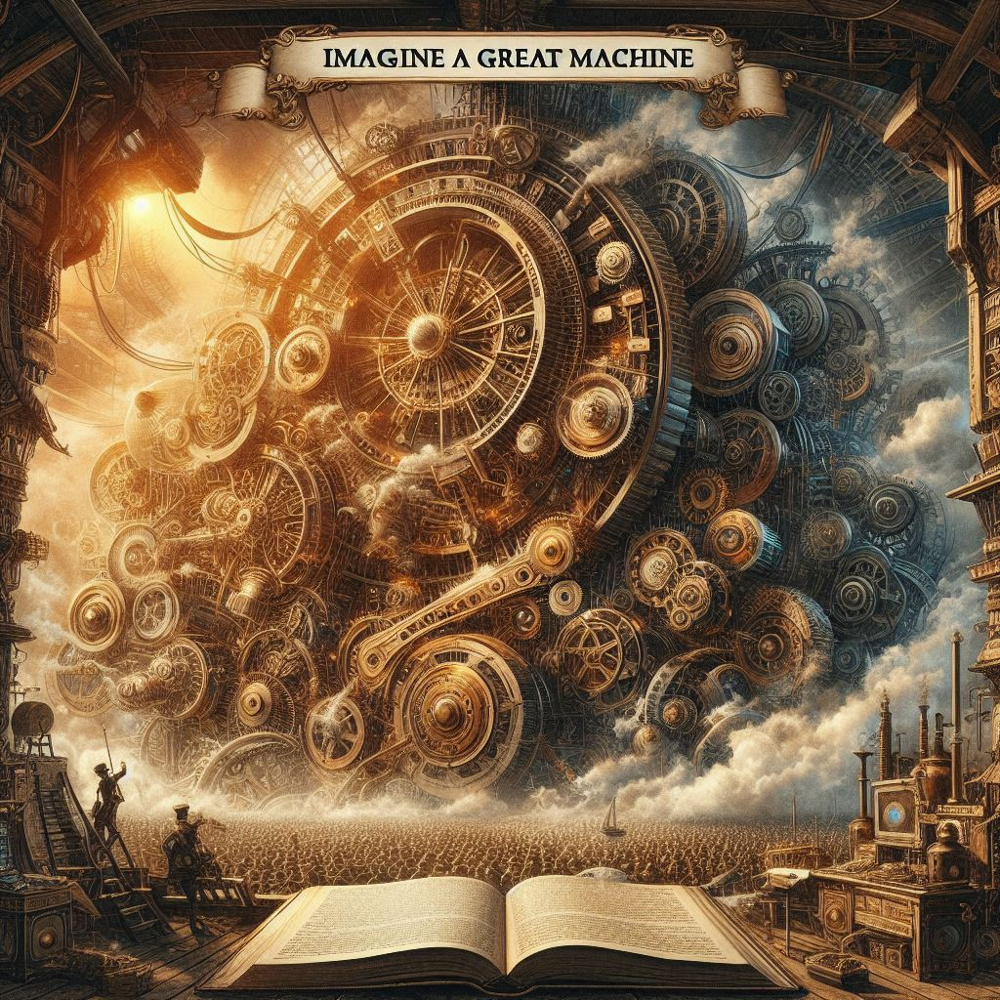
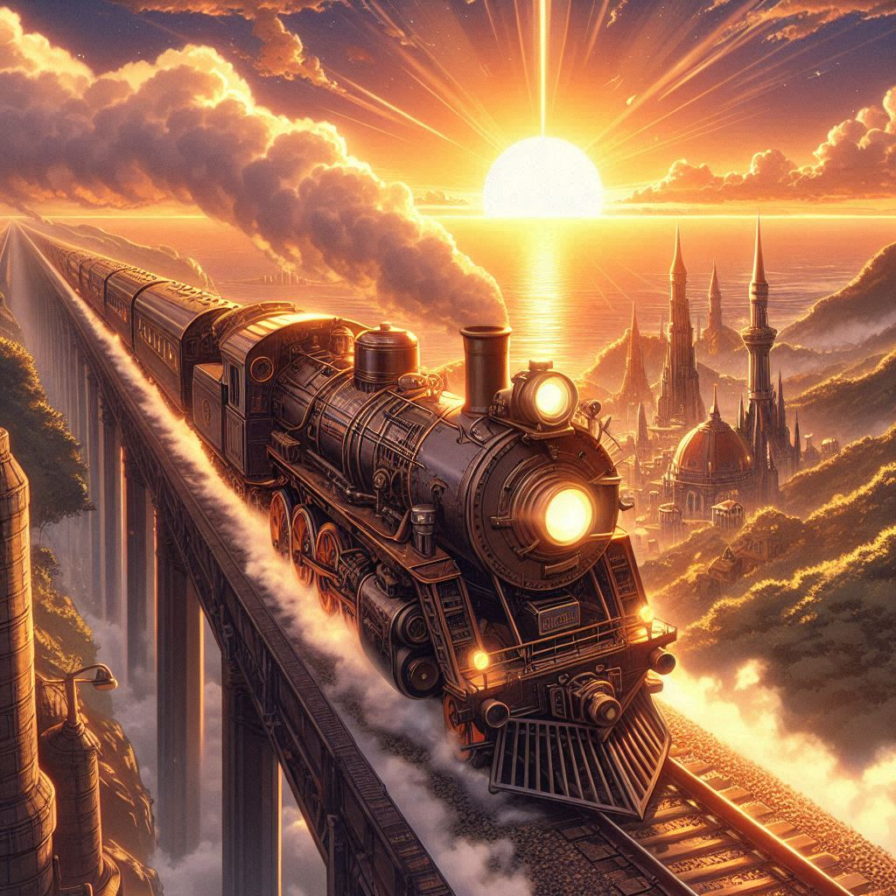
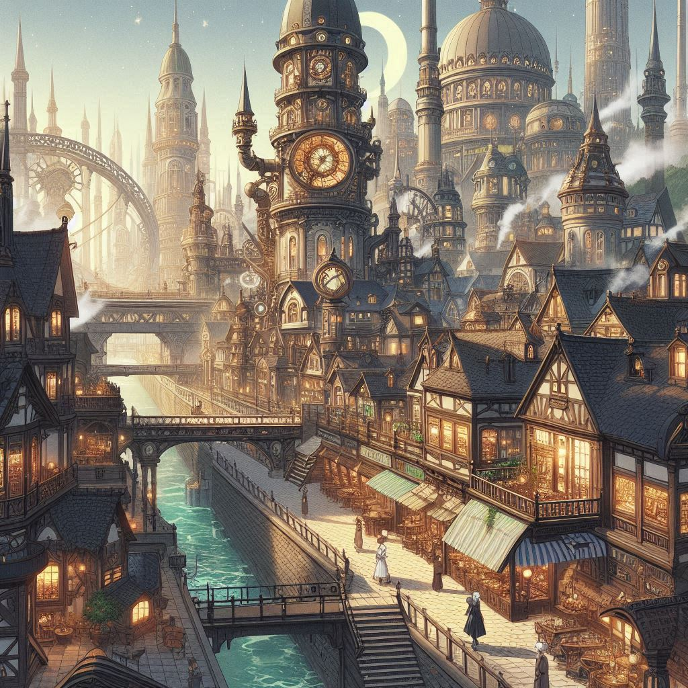
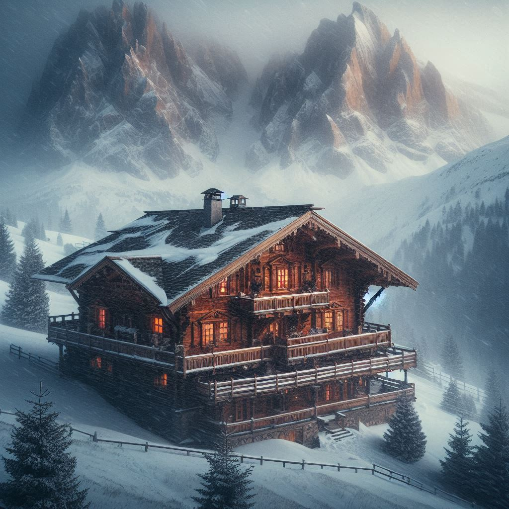
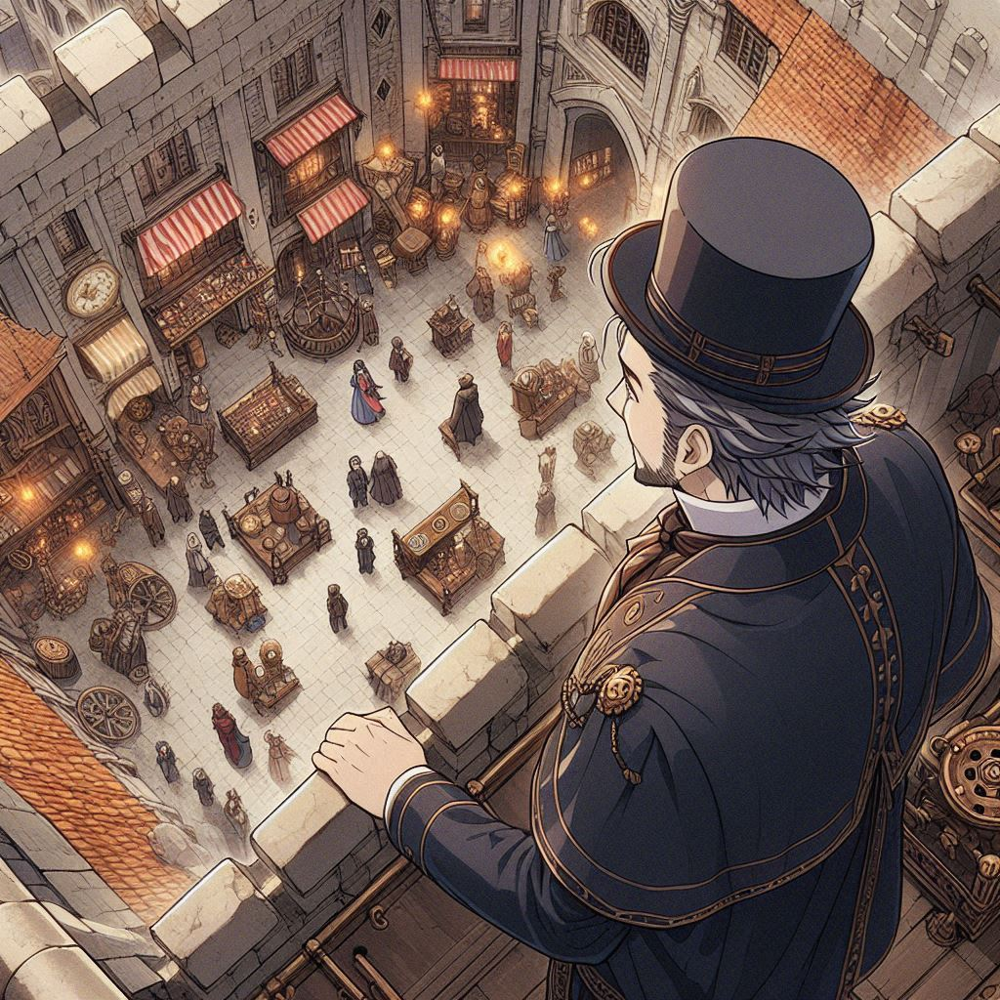

I finished writing a short story last year! It was one of my personal annual objectives for 2024 to finally submit to the Writers of the Future competition. The storied contest is named after L. Ron Hubbard (the Scientology guy 🚀) and accepts entries quarterly. I'd submitted on September 30, 2024 (for the 4th Quarter 2024 for volume 41 (Cycle 41D) batch).
Sadly, I didn't win. 🙁
That said, this short story –which I'd started writing in January 2024– is the first fiction short story that I've ever finished and I'm so incredibly proud of it. For over two decades now, I've long tried writing fiction, but while I've started countless drafts, this was the first I actually pushed across the finish line. (The difference-maker was having a concrete deadline– that made all the difference!!)
In the months that followed, I've pondered what I should with this short story and I'm honestly unsure. 🤔 I could release it as a Kindle Vella? Or just post it on my website? I finally decided to post the first two chapters on my website, just to see if it interests anyone at all. (I've also been wanting to add a "reading framework" to my site and this felt like a perfect chance to build that out!)
So if you're into reading fiction stories by random strangers on the internet, this is your chance! I don't want to give too much a way, but the story's in the fantasy genre and plays with ideas like the value of free will and its attendant burdens; the benefits of top-down control, centralized allocation and organization of resources; what happens when people are "too free"; and what an ideal governance structure for civil society might look like. The immense importance of faith also plays a major component as well. The story is meant for children but I hope adults will get something out of it too.
If you'd like to see more or have any comments/feedback, please let me know on Bluesky! 🦋
Thank you! Happy reading!! 🙂
Robert
Cincinnati, Ohio
March 2, 2025

Imagine a Great Machine in which every cog and gear connected without redundancy.
Where all pieces played part towards common purpose.
Capable of self-repair and never broken.
A Machine where all pistons fired in the same direction.
What would that look like?
How much could it do?
How far would we go?



For three long days, the Council of Five had been at an impasse. They'd met in secret at Mont Valkyr the 220th morning of Winter, horse drawn carriages having ferried each to the mountainside chalet. Rolling snowcapped hills ensconced Valkyr, with its rear abutting the woodland, and all was quiet.
Convened under false auspices, it wasn't until after arrival that committee members had learned the meeting's true intention. But by then, a deep and sudden blizzard had descended upon the mountaintop making departure impossible. It seemed as if nature itself had conspired to push for consensus and hasten action.
After two full days of deliberation, it was at last the morning before the final vote. On the terrace facing the woodland, with the rising sun just peaking over the eastern rim, Heinrich Lean finds Arturo Mengsk, the final holdout. Overhead, the sun shines bright and all is quiet; Arturo stands alone. The three other lords have all agreed but Mengsk has not and to move forward requires unanimity. There on the chalet terrace overlooking the world's edge, Mengsk smokes a cigar and breathes into the winter cold. A young man, but already with graying hair, he is the hero of two wars and wears an eyepatch. He'd lost that eye at the Siege of Dubus at the tip of a bayonet which had nearly ended it all.
"Arturo, please," pleads Heinrich from behind him. “This would change things forever.”
"Not all change is good."
"It shall happen whether you wish it or not. There is no stopping it. Why not join?”
Arturo scoffs and turns to look at his old friend. "When did you turn such a coward, Heinrich? Since when did we surrender before fighting? Before even trying? Is that who we are?"
"You saw with your own two eyes what I saw!" says Heinrich. "You heard her words! We could avert that! It's the same reason Svengård dropped the bomb all those years ago. To demonstrate not just overwhelming power, but inevitability."
"That was then and this is now," says Arturo, his voice heavy. He stands upright and defiant but his face is creased with weary. He flicks the stub of his cigar out over the edge and watches it fall into the snowy depths. "I have prayed and prayed on the matter, and every time, I’ve been told the same. We are but men, Heinrich, not Gods. It is not for us to decide."
Lord Lean grips the terrace banister frustrated. If ever there were a moment when all of history would bifurcate into what’d come before, and what’d happened after, this convocation was that moment. But without unanimity, there’d be no promised land. Arturo is his oldest friend; they've known each since they were cadets and he'd held the twins when they were born, when they'd lost Amal, and when Vivian had died. Heinrich knows Arturo better than anyone else he does in the kingdom. The war hero's stubbornness is renowned.
"I needn’t remind you," says Heinrich quietly, "that in absence of agreement, your own lands will be stripped from you. They’ll force the forfeiture of all your ranks and titles and the bureaucrats elected will be spineless, undoubtedly running Celica into the ground."
Arturo chuckles as he guillotines another cigar. "My great-grandfather built Celica from a backwater fishing village all those centuries ago into what it is today. But people's memories are short. You know the great irony, Heinrich?"
"I feel I'm about to be told."
"In times of war, no one wishes the throne. But in times of peace, everyone does. And yet— peace time is where empires go to die. Where hands grow soft and men turn feeble. Ruling in peace is a punishment I'd not wish upon my worst enemies." Arturo takes another deep breath and exhales. "They think they can do better? I welcome them to try."
The next week, across all the land, word by bottle is sent. A royal edict, promulgated far and wide to all four corners of the kingdom. In waves, the news slowly spreads throughout all of Celica. After a century of rule, the Mengsk lineage is abdicating the throne. Rule by bloodline has ended. In a first ever, Celicans will now select their next leader by popular election! In the streets, people cheer and celebrate. At last! They are free to choose anyone they wish! Heinrich watches it all from his balconied window, weary of what comes next. Without fail, he hears an insistent voice in the back of his head repeating over and over again: in no uncertain terms that this grand democratic experiment is an utmost terrible idea.
Meanwhile, Mengsk's retinue retires from Castle Menwen Vista that same day, horse-drawn wagons carrying away the royal family to lands yonder. For his decades of service, the Mengsk family line will for the rest of their days receive protection from the Palace Guard. It is the least the kingdom can do for its favorite son.
As Mengsk's sun wanes in Menwen Vista, another's rises. In a peaceful transfer of power, the nobleman and powerful merchant families of Celica back the charismatic politician, Reginald Legarre to ascend the throne. A mysterious outsider from a faraway land always recognizable by the Obsidian stone that hangs around his neck, Legarre is tall and charming, as well dressed as he is spoken, and with his great riches wins the first ever election easily. His speeches are heard throughout all the land and his pamphlets everywhere! Whereas the people voting don’t even know his opponent’s names, Legarre’s rallies soon become thing of legend, his impassioned words able to always touch the hearts of millions. At his inauguration, Legarre announces a “fresh era” and that they’d no longer “careen from one emergency to the next, for it was finally time for stability.” Fireworks light up the night sky the evening Legarre accepts the golden scepter and Celicans far and wide wait with bated breath; an evermore glorious dawn imminent, just on the horizon's edge.
As Legarre’s much anticipated term begins, and then eventually sweeps into another and then another as the years pass, Mengsk's abdication slowly fades into the distant past and from collective memory. For some time, he's the talk of towns and villages; taverners constantly whispering how the old general had been out of his depth. How he'd been in over his head and unfit to wear the crown. Others say that after the war, he’d only accepted the scepter reluctantly and it was a rulership he'd never really even coveted. In the end though, it is generally concluded that no one really knows why Arturo Mengsk abandoned his throne. And that perhaps no one ever would.

On the 137th crisp morning of Autumn, Governor Normus Legarre, grandson of Reginald, stands on the ramparts of Menwen Vista and watches the townspeople scurry below like ants. Legarre enjoys this feeling of power and lording over all the little people below when a small voice calls out from behind him.
"Governor, Sir?"
Legarre stiffens; his fleeting feeling of joy evaporates, like morning dew meeting the sun. His assistant, Penny, has come calling.
"Pray tell," he asks, "what is it now?"
“Just the usual report this morning—more chatter and upheaval across the Hoven border. Refugees —including women and children— clamoring for food, water, and medicine—”
“Not my circus, not my monkeys,” says the Governor; he waves his hand dismissively and takes another sip of tea from his finely enameled porcelain. “Next?”
Penny checks her notes. "The monument report you'd requested has finally returned. As of this morning, Foreman Gordo reports they’re about halfway finished"
Legarre chokes on his tea. "Only halfway?!"
"Yes, Sir.”
Only halfway! After astronomical sums of gold and silver spent! (And in an election year, nonetheless!) Legarre closes his eyes and rubs his forehead, already able to feel a migraine fast approaching. The Celebration is only a mere semi-annum away! If the monuments are not completed by then, he’d be a laughingstock of all the realm! Ridiculed to high heaven and beyond!
"Very well," Legarre finally says. "I suppose it cannot be helped. Triple the shifts to work around the clock and arrange to have Foreman Gordo beheaded in the public square at noon. Then have a chariot drag his limp body around Menwen's perimeter a few laps for good measure. We must make an example of such abject failure. Simply unacceptable."
Penny nods. The Governor is feeling charitable today; the previous Foreman had gone by way of boiling vat after falling behind as well. A beheading would be a most generous and gracious mercy.
"When you are ready, the Commissioner is waiting in your chambers," says Penny on her way out. "He did not say what about."
Commissioner John Pendergast stands in Governor Legarre's study and examines the heads. On the walls are the heads of various game animals, mounted as trophies. A Rhinosaurus-Rex, a Sabretooth Dragon, all very fearsome creatures. Pendergast never much liked the new Governor and is certain that Legarre hasn't the faintest clue how to actually handle a rifle. But as the Agency's head, it was not his place to espouse opinions. So he keeps his thoughts to himself.
"Commissioner? What brings you in this fine morning?"
"Ah," says Pendergast. He leans aways from the head of the Appalachian Gator he'd been studying. "There is news, Governor, of extremists at Van Hoven’s eastern edge. Encroaching on our borders, testing the peace. There’s been another bombing in Bramble Square."
Governor Legarre frowns. "Another bombing? Again? This is the second time in two fortnights, is it not?"
"It is, Sir."
Legarre looks at the reports stacked up high upon his desk. This is his fifth annum in office and over this time, he has developed a sense for knowing when things are awry. For over a half-century now, he is the third Legarre to have occupied the office. A good elected official is one that maintains the peace. It is what his father had done, and his grandfather, before even that. With every act he takes, he always asks himself, “What would have Grandfather done? What would have Father? What next action is worthy of the family name?”
"Tell me, Commissioner," Legarre says slowly, "do you know why peace has lasted between us and the Hovens for the past near-century? Despite the fact we have so much and they so little?"
"Our great arsenal?"
Legarre scoffs. "Please. Violence has never deterred people who have nothing. In fact— violence is the first recourse of people with nothing! No, our enduring peace owes its success to the promise of hope."
"Hope?"
"Yes. The peace we’ve worked so hard to nurture can only sustain because the poors believe they can one day achieve our wealth. Our way of living, our schools and food, our songs and dance! Hope is the all-purpose carrot to be dangled before those who have nothing. Even better than food, water, shelter, and wealth is the lure called hope."
"Even when such aspiration is largely delusional?"
Legarre smiles. "Especially when such aspiration is delusional, Commissioner. And so that is why it’s paramount we finish the monuments with haste; to give all the realm a beacon to see our strength! And why also we must secure the border. For there to exist desire, there must be difference. And for there to be difference, there must be separation.”
“A sensitive tension to navigate, Governor,” says Pendergast, his face a shadow of doubt. “Considering their number so many, and our own so few.”
“It’s true,” concedes Legarre, “the poors must see that their government serves them. It’s a fraught and narrow path but we must feed them this aspirational fiction so they'll forever be a perpetual underclass willing to commute in and out daily. For without them, all of civil society —the gears and cogs that make our everyday go— would grind to a violent and catastrophic halt."
"Everything we've built is so fragile. It really all hangs by a thread."
"Indeed it does. Which is why I wish you look into this matter," says Legarre. "Dispatch our agents to the western edge to return with news. If there is trouble afoot, see it prevented. Keep the peace at all costs."
"It will be done."